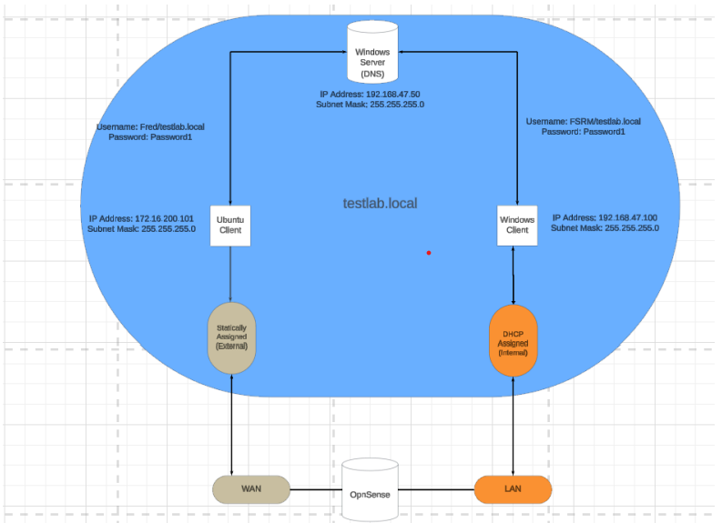
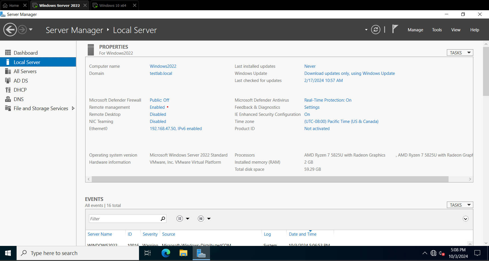
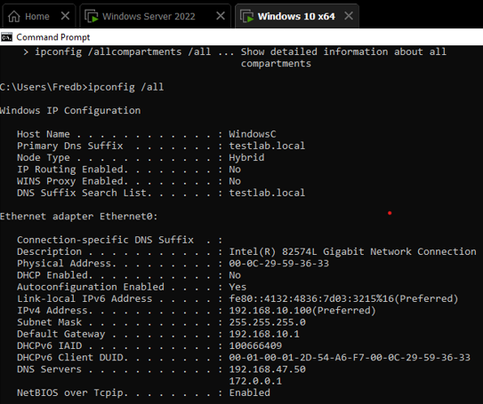

Overview
This page showcases screenshots and a video demonstrating a virtual Windows directory and domain environment created for learning purposes.
Active Directory Topology

Windows Server Domain Settings

Windows Client Domain Configuration

Video Demonstration